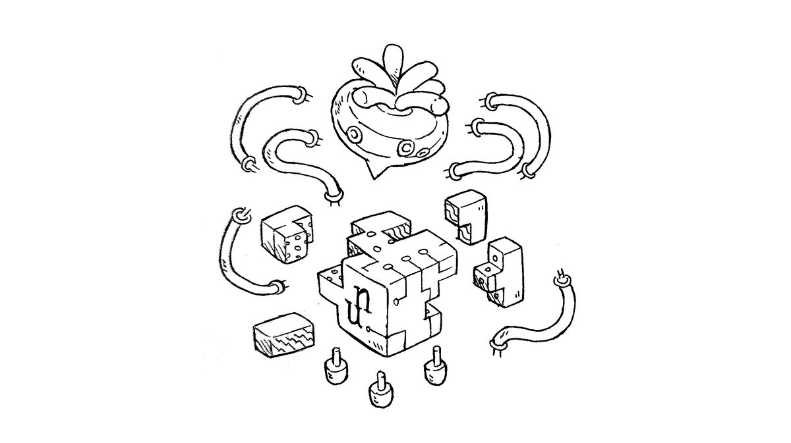

uxn
The Uxn/Varvara ecosystem is a personal computing stack based on a small virtual machine that lies at the heart of our software, and that allows us to run the same application on a variety of systems.
It is designed with an implementation-first mindset and is tailored to our specific needs for hosting graphical applications, but is entirely open and welcomes anyone to adopt it as a release target. Uxn is programmable in its own unique language, and the distribution of Uxn programs is akin to sharing game roms for classic console emulators, to learn more, see our notes on uxn design.
Desktop Versions

To run Uxn programs, you will need an emulator that works on your system. Below are links to emulators for major operating systems, and for a more obscure environments. Alternatively, you can also implement your own by looking a the VM specs, the IO specs and the source code.
Linux Windows MacOSIf you need a hand getting started, join us on #uxn on irc.libera.chat, or Discord. Once equipped with an emulator, you can pick among these toys, games and tools, write your own programs or try ours:
- Oquonie, a bizzare universe
- Donsol, a card dungeon crawler
- Left, our text editor
- Noodle, a drawing program
- Orca, the livecoding environment
- Nasu, a sprite editor
- Turye, a font editor
- Catclock, a desktop clock
- Dexe, a hex editor
- Bicycle, an interactive REPL
uxn guide
The same Uxn rom can be used on a variety of desktop computers, on tiny electronics, modern handhelds, and in the browser.

Our general cross-platform desktop emulator requires SDL2, alternatively, you could download the plain Win32 or X11 version, but we will not cover these in this guide. If you don't have SDL2, here's how to get it:
sudo pacman -Sy sdl2 # Arch sudo apt install libsdl2-dev # Ubuntu sudo xbps-install SDL2-devel # Void Linux brew install sdl2 # OSX doas pkg_add sdl2 # openBSD
Startup

Double-click on uxnemu to launch it, on some Linux distribution, it might not be possible to do so, if for some reason uxnemu is not be clickable, navigate to the downloaded files in the terminal and launch it from there. To launch the ROM from the terminal, point the emulator to the target .rom file:
bin/uxnemu path/to/example.rom
There are many ways to launch ROMs:
- With the launcher program, see preview image above
- By dragging .rom files onto the emulator window
- Via the terminal
Emulator Controls
- F1
- toggle zoom
- F2
- toggle debugger
- F3
- take screenshot
- F4
- load launcher.rom
Buttons
- L-Ctrl
- A
- L-Alt
- B
- L-Shift
- Select
- Home
- Start
Other Systems

Uxn can also run on classic consoles and on old electronics. Currently, there are ports(not all are complete) for GBA, Nintendo DS, Playdate, DOS, PS Vita, Raspberri Pi Pico, Teletype, ESP32, Amiga, iOS, STM32, IBM PC, and many more.
See the full list of emulators.
Need a hand?
The following resources are a good place to start:
You can also find us in #uxn on irc.libera.chat.